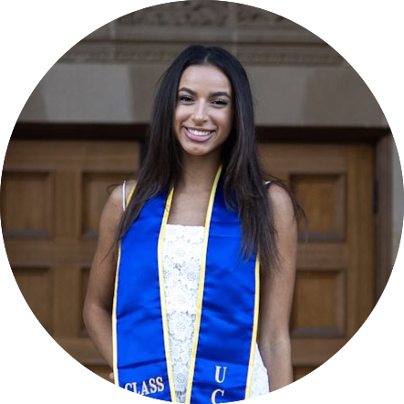

|
Annya Dahmani
I am an incoming PhD student in Psychology at UC Berkeley, advised by Alison Gopnik. I received my BS in Cognitive Science
with a Specialization in Computing at UCLA where I graduated with Departmental Honors and Cum Laude. At UCLA,
I worked with Tao Gao in the Visual Intelligence Lab and Hongjing Lu in The Computational Vision and Learning Lab. I completed my senior honors thesis in the Psychology Departmental Honors Program with Tao Gao as my faculty sponsor. I was also a part of UCLA's Psychology Research Opportunity Program (PROPS) where I was advised by Patricia Cheng. Throughout my time at UCLA I was funded by the Dean's Award for Life Science Research.
I was a Summer Intern in 2021 at Yale University working with Yarrow Dunham in the Social Cognitive Development Lab and Julian Jara-Ettinger in the Computational Social Cognition Lab.
At Google I've worked on Glass, Lens Blur, HDR+, Jump, Portrait Mode, Portrait Light, and NeRF. I did my PhD at UC Berkeley, where I was advised by Jitendra Malik and funded by the NSF GRFP. I've received the C.V. Ramamoorthy Distinguished Research Award and the PAMI Young Researcher Award.
Email /
CV /
Bio /
Google Scholar /
Twitter /
Github
|

|
{kind=link}